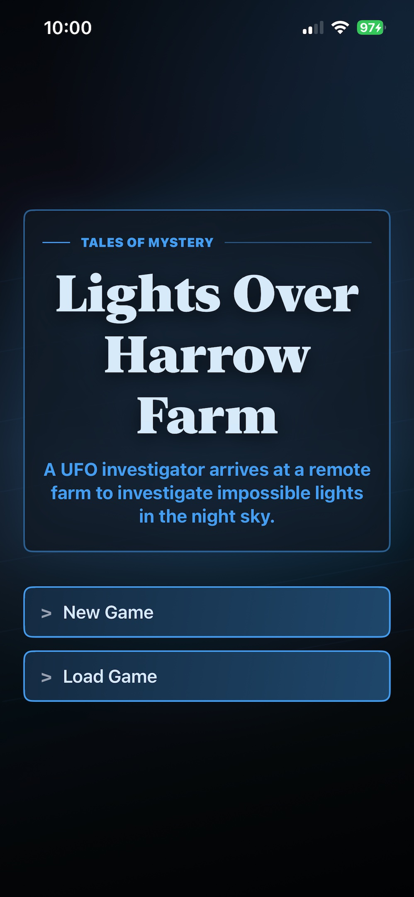
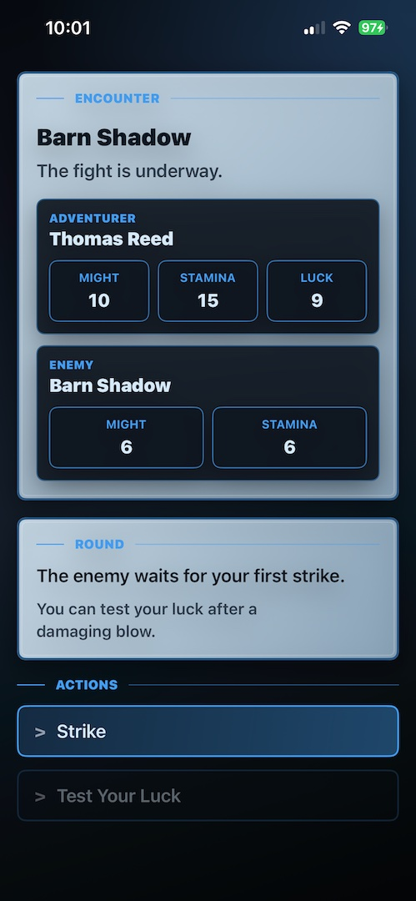

Stone & Tankard Games is a solo indie studio creating mobile adventures, from strange stories in familiar places to kingdoms built through exploration.
The games
A little further from the ordinary.
A mystery ready to uncover. A new adventure taking shape.


Lights Over Harrow Farm · In-game screens
Available nowiPhone & iPad
Interactive fiction · Mystery
Lights Over Harrow Farm
An ordinary assignment. An impossible story.
Strange lights hang over a remote Ohio farm. As a young reporter, follow the evidence, face the unknown, and decide how much of the truth should reach the public.
Your next adventure starts a little closer to home.
A kingdom connected to the world around you. Develop your castle and settlements, lead field armies into top-down battles, and send a separate party of heroes into first-person dungeons.